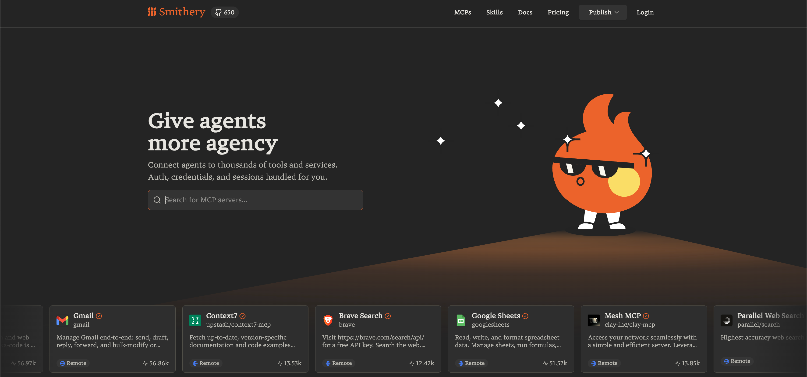

Loop + Tools + State + Policy
| LLM 호출 | Agent | |
|---|---|---|
| 입출력 | 1-shot | 루프(loop) |
| 외부 세계 | 없음 | 도구(Tool Use) |
| 상태 | 대화 맥락뿐 | 명시적 State |
| 결정 | 유저 지시 | 자가 결정 |
같은 입력이어도 루프 경로가 다름 · 테스트 어려움
한 요청당 LLM 여러 번 → 비용·지연 곱해짐
step 제한·토큰 예산 필수
툴 실패 시 어디서 재개?
도구가 실 시스템을 건드림 → 감사 필수
어제 통과한 경로가 오늘 달라짐 → QA '버그' vs 개발 '재현 안 됨'
한 질문에 LLM 17번 · 1인당 $0.85 → 무료 사용자 1K = 월 $25K
Tool 실패 시 '재시도' LLM 판단 → 8시간 만에 토큰 예산 고갈
항공권 결제 후 호텔 예약 실패 → 반쯤 결제된 어정쩡한 상태
"내 데이터 다 지워줘" → LLM이 delete 도구 실행, 승인 없음
이름 · 스키마 · 설명 · 권한 tag
샌드박스 · 타임아웃 · 리소스 제한
긴 결과 요약 · PII 제거
누가 언제 어떤 도구를 쓰는가
defer_loading: true로 마킹 · 필요할 때만 검색 후 로드 · 77K → 8.7K 토큰 (85% 절감) · Opus 4.5 정확도 79.5% → 88.1% · 2026.01 Claude Code 기본 탑재
LLM이 Python 코드를 작성해 도구들을 오케스트레이션 · 결과는 sandbox에서 처리, 컨텍스트 진입은 필요한 것만 · 43K → 27K 토큰 (37% 절감)
질문을 받고 관련 있을 만한 도구 5~10개만 동적 노출 · 도구도 RAG의 retrieval source처럼 취급 · 자체 구현도 가능, MCP Anthropic API가 1급 지원

Plan 단계와 Execute 단계 분리. 다단계 리서치.
결과 자기평가 후 개선. 고난도 코드 생성.
전문가 Agent들을 Supervisor가 라우팅. CrewAI 방식.
상태 기계로 명시적 전이. LangGraph 철학.
JSON 카드로 capabilities · auth · endpoint 노출. Agent를 찾을 수 있는 단위로 만드는 표준.
id · state · artifacts · history.
submitted → working → input-required → completed
JSON-RPC 2.0 over HTTP(S)
동기 · SSE 스트리밍 · 비동기 Push
내부 메모리·프롬프트·툴 미공개
블랙박스를 그대로 두고 협업
다른 벤더·프레임워크 Agent와 통신 가능
| Workflow | Agent | |
|---|---|---|
| 경로 결정 | 개발자가 사전 정의 (deterministic) | LLM이 매 step 동적 결정 |
| 예시 | Routing · Parallelization · Orchestrator-Workers · Evaluator-Optimizer | ReAct 루프 · Plan-and-Act |
| 예측 가능성 | 높음 · 테스트 쉬움 | 낮음 · trace 분석 필수 |
| 비용·지연 | 낮고 안정 | 높고 변동 |
| 적합 작업 | 도메인 좁음 · SLA·감사 중요 | 탐색·문제 다양 |
| LangGraph 표현 | Edge · Conditional Edge로 명시 흐름 | ToolNode + LLM 루프 + Conditional Edge |
TypedDict. 노드 간 공유 컨텍스트
함수/Runnable. State → 업데이트
Conditional — 상태 기반 전이
prebuilt — 툴 실행 전용 노드
SQLite/Redis → 재개 가능
state.messages에 기록 → 모델이 스스로 복구.